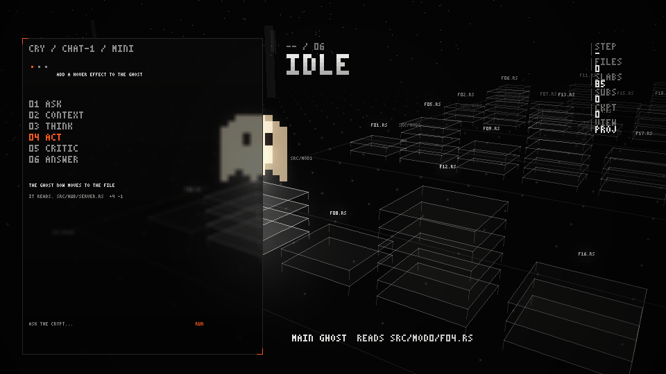
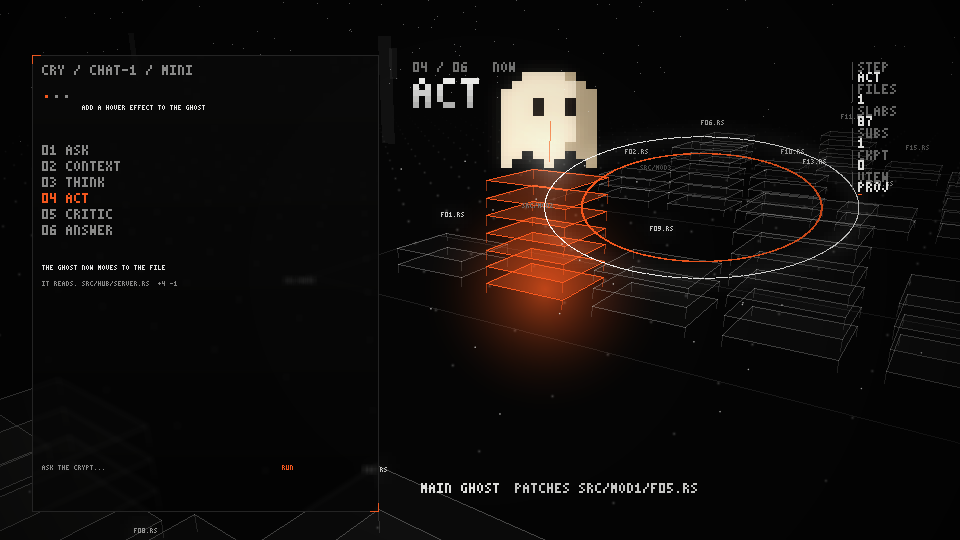
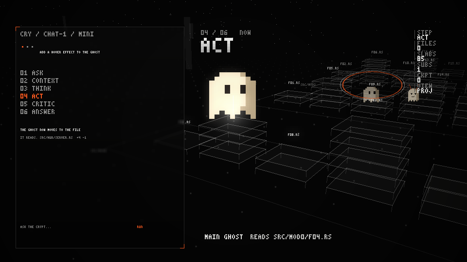
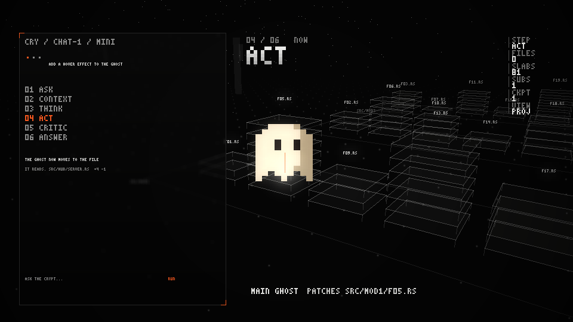
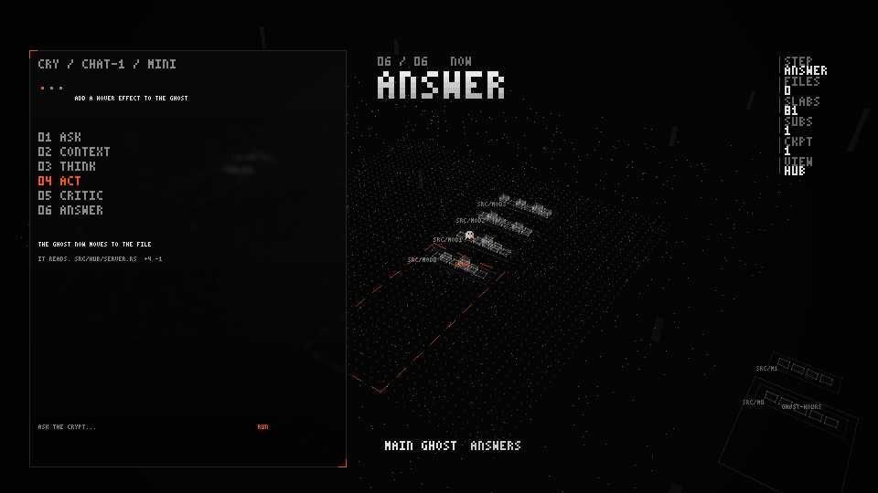
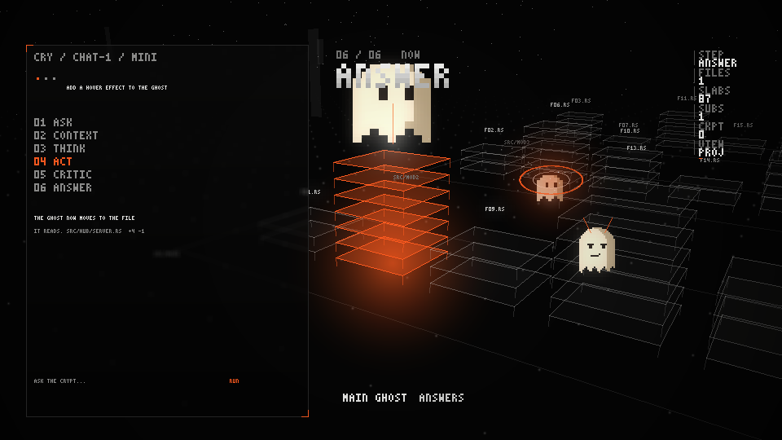
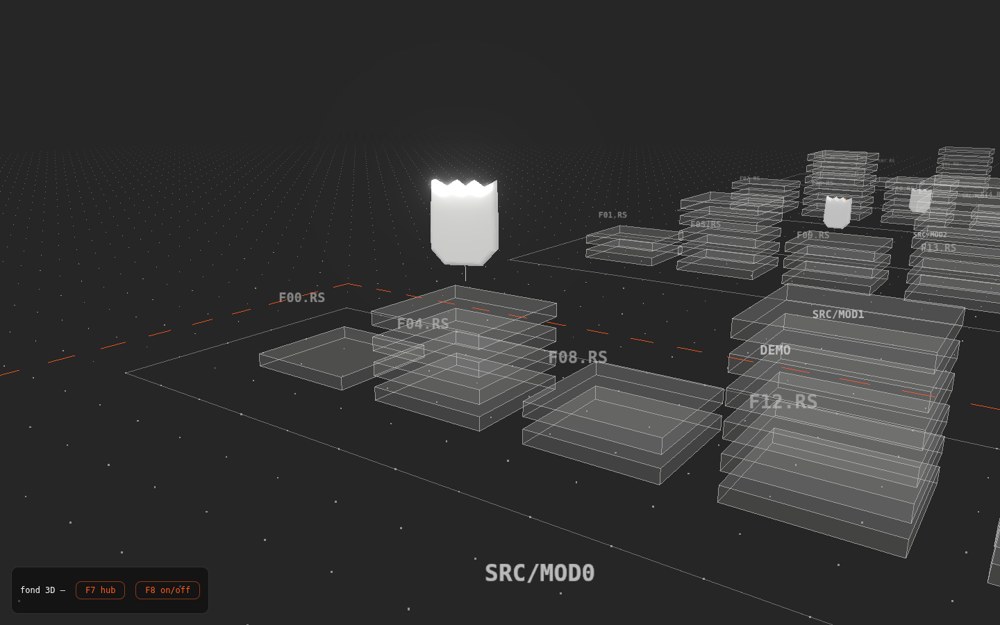
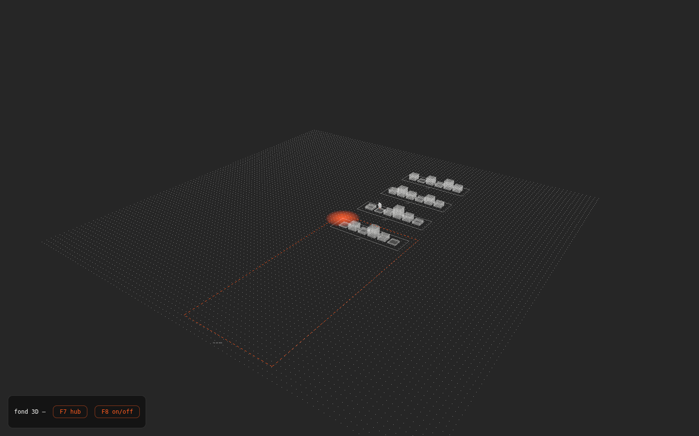

La scène, en direct
Neuf secondes de scénario réel du moteur :
lecture (faisceau blanc), écriture (orange + dalle ajoutée), sous-agent poussé dans
le vide et impact au sol, Kiro sur son perchoir, /rewind qui effondre
les dalles, puis F7 qui éloigne la caméra sur tous les projets.
Ce que montre le fond






--space-shot : la planche du
monde 3D posé sur l'arborescence réelle de Crypt, panneau de chat par-dessus.Aussi dans la webview (port Tauri + Svelte)

feat/space-tauribackdrop-filter), impossible dans un terminal.
Mêmes événements, deux rendus : le terminal (image Kitty en
z-négatif, branche feat/project-space-3d) et la webview
(three.js, branche feat/space-tauri) partagent le contrat
SceneEvent et la mise en place du monde.
Comment ça tient dans un terminal
RgbaImage à demi-résolution, agrandie ×2.SceneEvent typés sur un canal borné ; le rendu les plie dans un état
logique. Vue coupée (défaut), l'émission ne coûte rien.Essayer
F8 — activer / couper le fond 3DF7 — vue de tous les projets--space-shot x.png — planche hors terminal--space-anim dir/ — frames d'une animationKH_SPACE_WORKSPACES — dossiers de projets (défaut ~/code)Les 100 idées — 10 faites
- Fantômes = sprites réels du dépôt (2 frames)
- Bloom approché + poussière + piliers
- Panneau de chat fidèle (flou, dégradé, coins orange)
- HUD : titre d'étape, caption, métriques
- Étiquettes LOD + anti-chevauchement
- Quartiers multi-projets + « you are here »
- Observation du disque sans dépendance (écritures réelles)
--space-shot/--space-anim- Budget de perf mesuré (bench 500 fichiers)
- Chutes, impacts, perchoir de Kiro, effondrement /rewind
- Parallaxe des couches UI
- Ombrage de Lambert sur les dalles
- Point-light orange sur le fichier écrit
- Dalle qui se soulève à la création
- Révélation gauche→droite de la réponse
- Trace des 6 étapes dans le panneau
- Barre de statut tok/s · p50 · contexte
- Bouton RUN / RUNNING avec glow
- Un fantôme par sous-agent multi-chats
- Plateforme flottante pour la recherche web
- Borne de checkpoint au sol
- Stats par projet (fichiers, lignes, activité)
- Projets GitHub non clonés en grisé
- Navigation hub au clavier
- Mini-carte des districts
- Transitions de caméra en spline
- Chemins tronqués au centre
- Étiquettes orientées au sol
- Police ×2 lissée
- Base de caméra précalculée par frame
- Culling par boîte englobante
- Cache des projections de sommets
- Fps affichés + saut de frame
- 20 fps sous forte charge
- Zéro allocation par frame
/space on|off|hub|shot- F8 persisté dans les settings
- Molette / drag caméra
- Clic sur un fichier
- Mode cinéma
- Info-bulle au survol
- Toggles étiquettes / sol
- Vitesse d'animation configurable
- Aura par statut git
- Branche courante au sol
- Diff en micro-dalles
- Fichiers « chauds » par commits
- Arbre =
git ls-files .gitignorerespecté- Districts par worktree
- Fanion PR / CI
- Kiro en balade dans la 3D
- Brouillard rouge sur alerte
- Dalles qui s'effritent à la suppression
- Sous-agents échoués en cendres
- Jump scare discret
- Débris persistants après impact
- Lanternes d'allées
- Mode crypte au sol
- Écho en anneaux à la réponse
- Almanach en particules
- Golden images par hash
- Invariant « panneau sans fond »
- Repli demi-blocs non-Kitty
- Message si pas de Kitty
--space-logJSONL--space-replay- PLAN.md + captures au dépôt
- Garde CI lignes / fonctions
Liste complète et détaillée : docs/design/project-space/IDEES.md · spec : DESIGN.md · brief : BRIEF.md